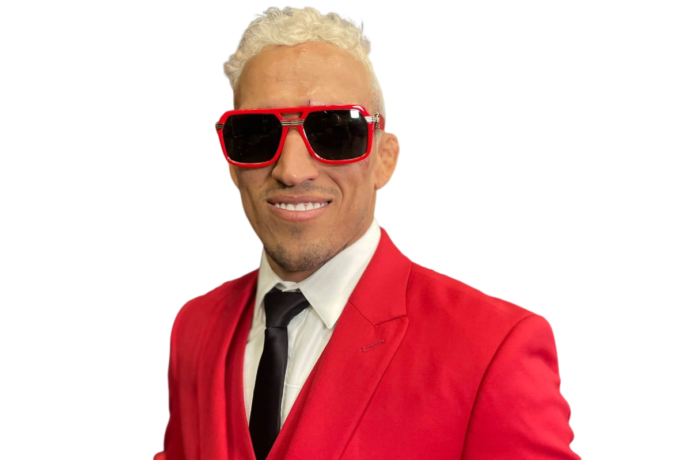
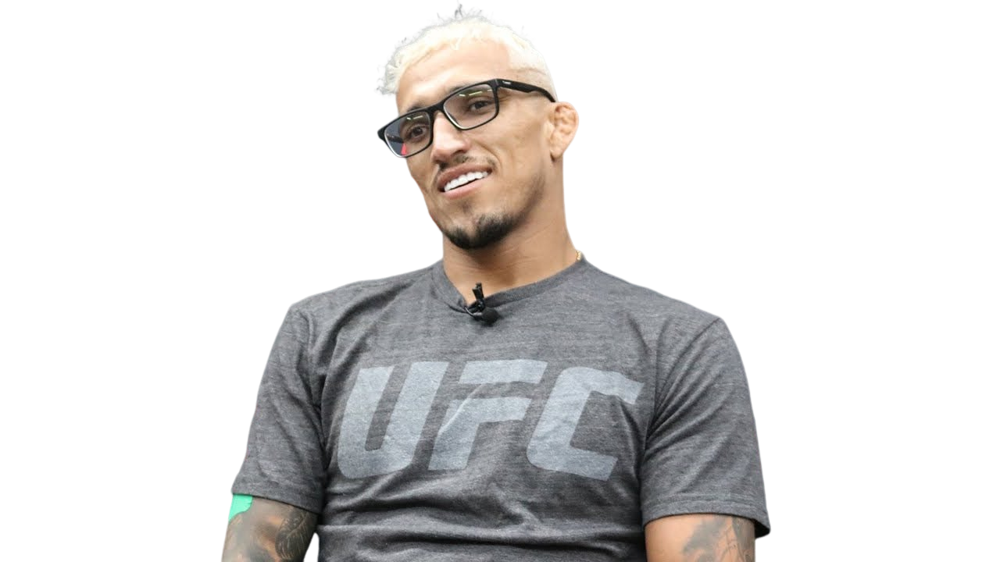

“
O campeão tem nome e se chama

“
O campeão tem nome e se chama
Charles Oliveira da Silva, conhecido mundialmente como Charles do Bronx, se tornou um fenômeno no Ultimate Fighting Championship (UFC) nestes últimos anos, após conquistar e defender o título da categoria peso-leve, considerada por muitos como a mais disputada da organização.
Charles nasceu e cresceu no distrito de Vicente de Carvalho. Criado por uma família humilde, mas muito guerreira. O atleta aos 12 anos, após passar por coplicações de saúde, ele conheceu o jiu-jitsu e desde então, ele foi superando cada obstáculo até chegar no UFC.
Lá, Do Bronx também contou com a desconfiança e chegou a ser conhecido como um lutador que só vencia lutas fáceis e, nas horas difíceis, acabava sendo derrotado.
A história mudou em 2017, quando Charles começou a vencer todas as suas lutas. Em 2021, o reconhecimento veio e ele se tornou campeão após vencer Michael Chandler. O lutador da Baixada Santista ainda detém o recorde de maior número de finalizações no maior evento de lutas do mundo, são 16 no total.
Em 22 de dezembro de 2020, Charles foi até a comunidade da Prainha, localizada no Guarujá (SP), cidade onde mora, e distribuiu 500 cestas básicas a famílias carentes, no dia 30, o lutador voltou ao local para realizar mais doações. Dessa vez, Charles entregou 300 cestas de frango aos moradores do local e registrou o momento em suas redes sociais.
Charles conta que quando foi lutar pela primeira vez em um evento de MMA, a maioria dos lutadores tinham nomes diferentes, chamativos, e o lutador apenas tinha em mente “Charles Oliveira”. Até que, na hora da inscrição perguntaram se ele realmente era “de favela, de periferia”, e então decidiram colocar “Do Bronxs”. A partir daí, esse apelido ficou sendo ultilizado pelo paulista em todas suas lutas.
“Vou falar a verdade, sou um cara que tem muita fé em Deus e não é brincadeira. Se eu tirar meus óculos, posso ver apenas cinquenta por cento. Isso nunca me atrapalhou na luta. Deus me abençoa tanto que eu posso ver normal. Mas na rua, se eu tirar, fico cego.”
